Martins - A Princesa Serrana
Martins é uma cidade que combina história, cultura, natureza e hospitalidade de forma única. Seja para quem busca aventura, tranquilidade ou cultura, a cidade serrana do Rio Grande do Norte oferece uma experiência completa e inesquecível.
Galeria
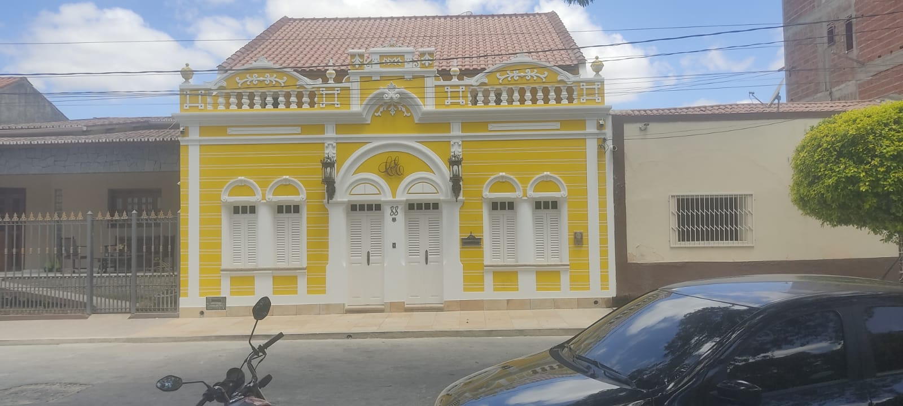
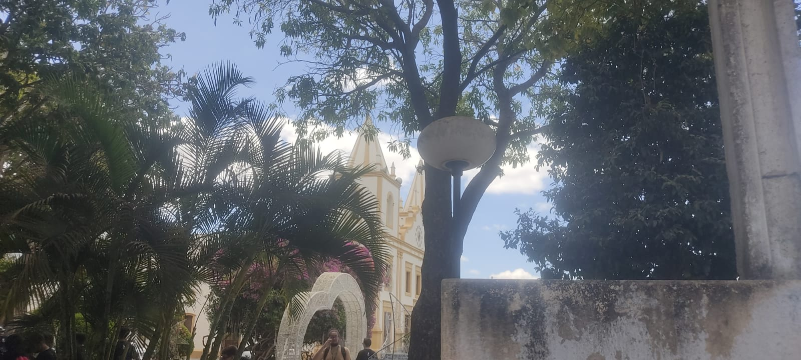
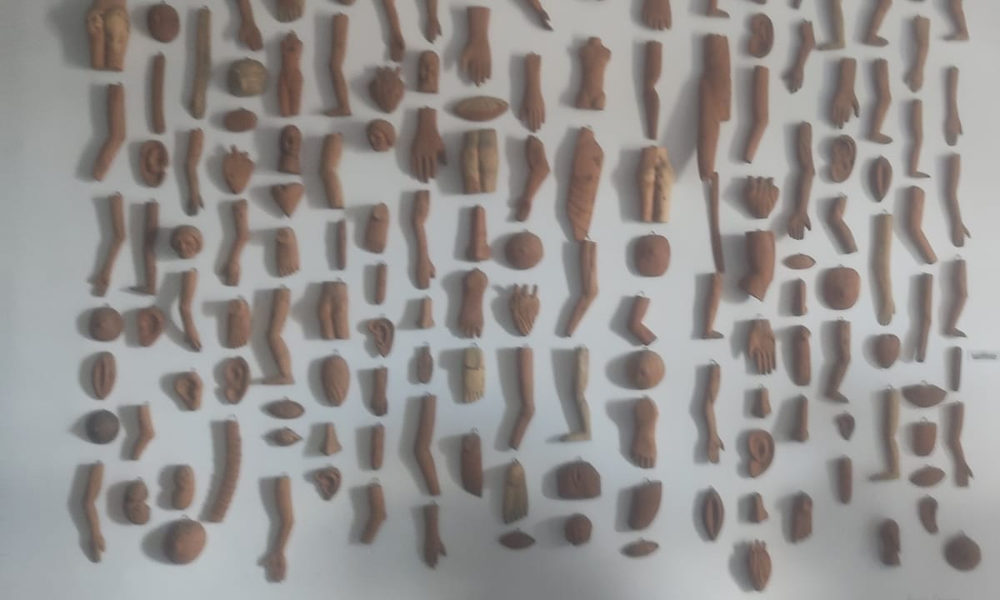
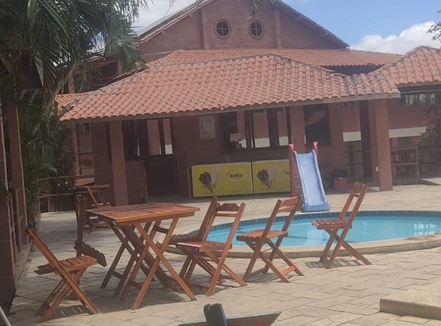
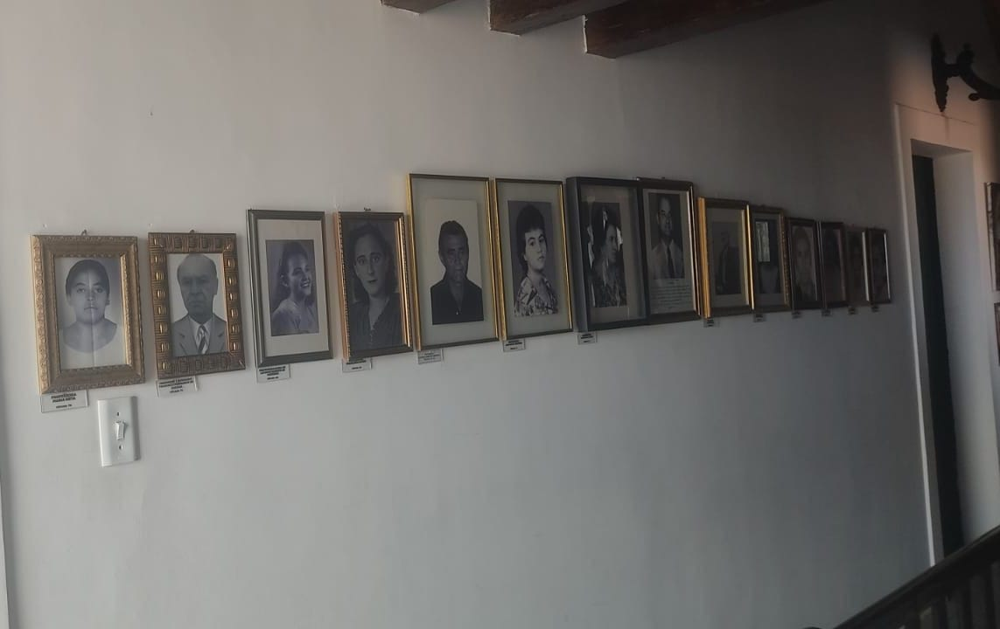
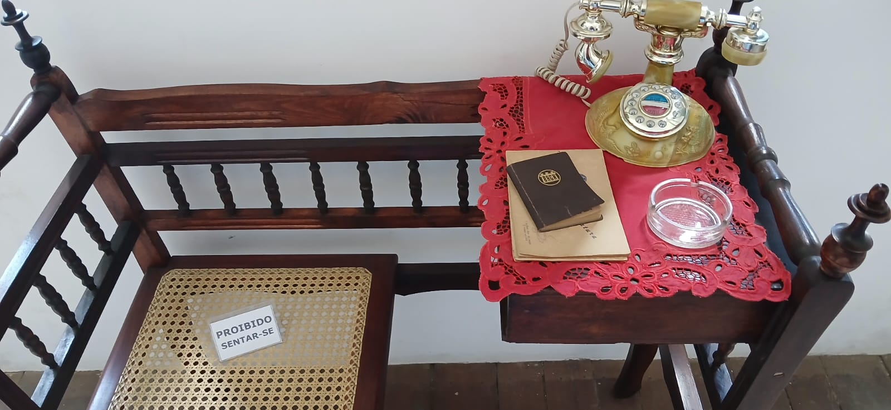
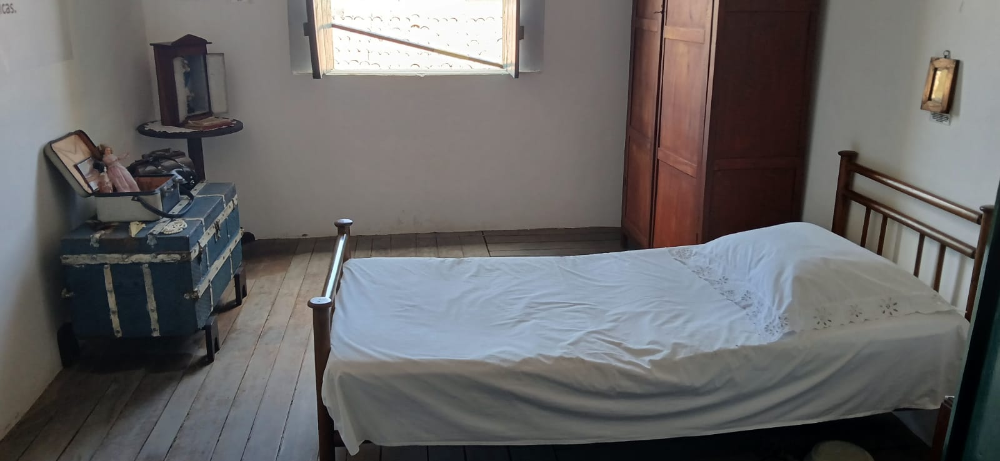
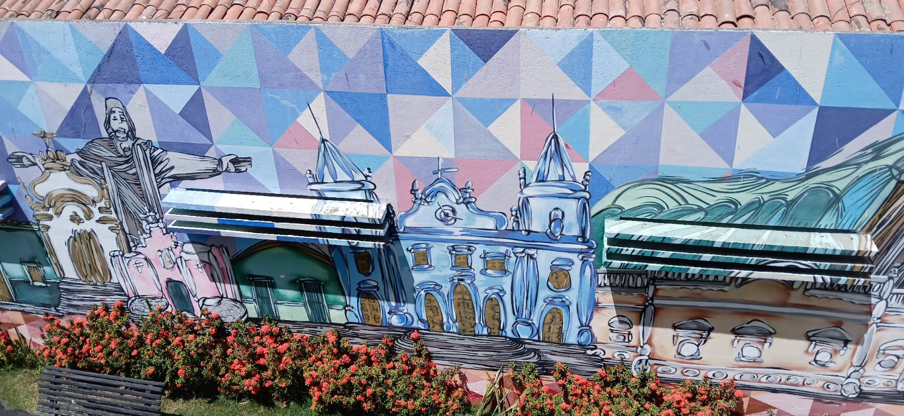
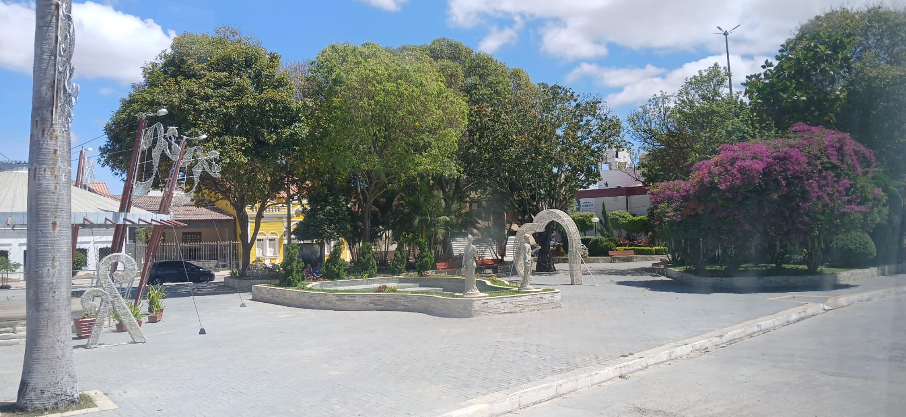
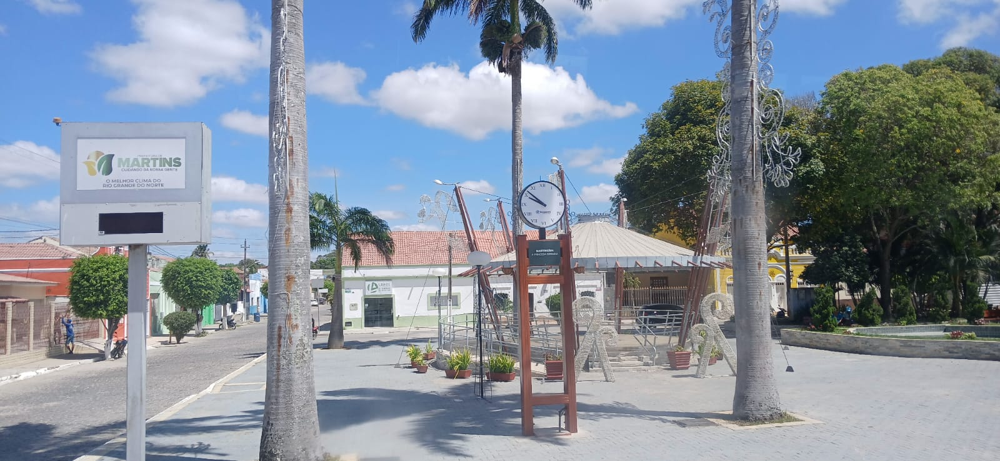
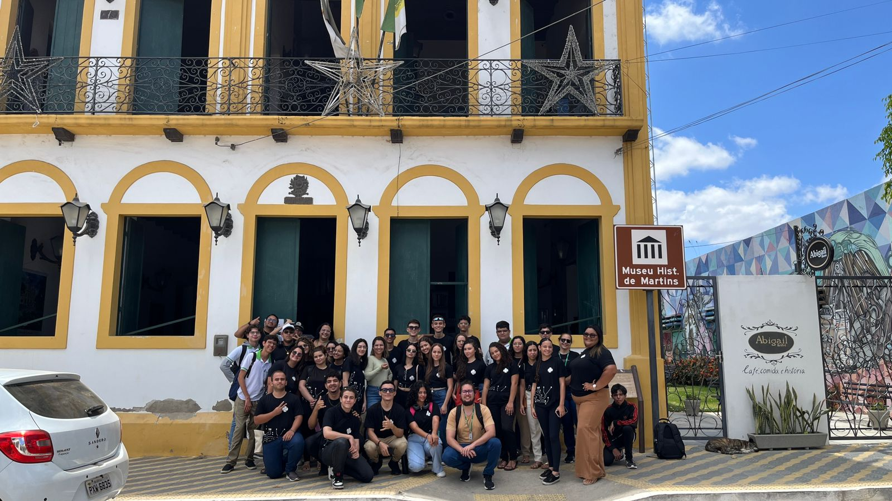
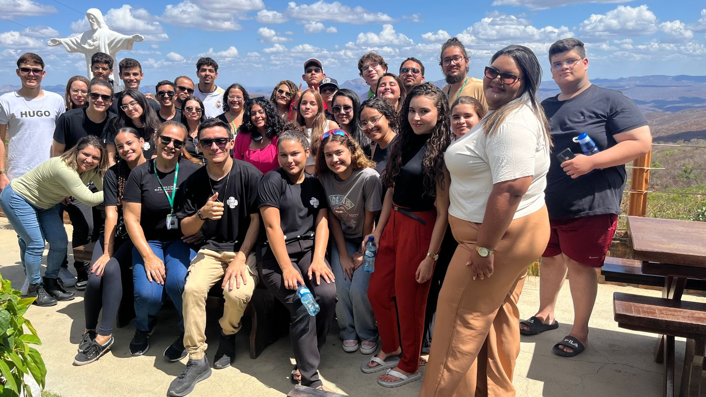